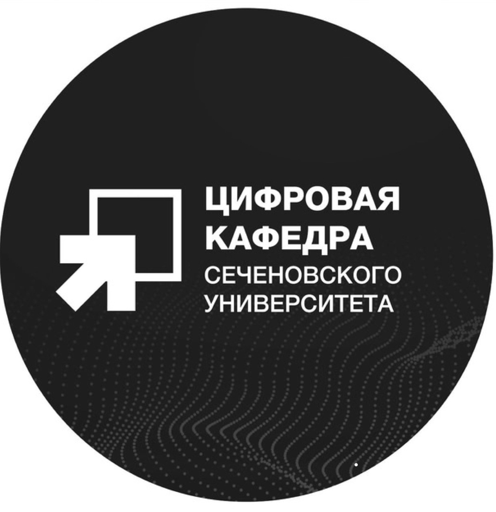

Обучение по программам разработчика цифровых медицинских сервисов и анализу данных стало особым моментом в нашей жизни. Оно позволило нам погрузиться в мир информационных технологий и получить ценные знания, которые мы смогли применить на практике. С помощью поддержки наших преподавателей и тьюторов, мы объединились в команду и начали разрабатывать свой проект.
Цифровая кафедра Сеченового Университета стала нашим надежным руководителем и наставником на данном пути. Благодарим за поддержку и возможность развиваться в области цифровой медицины. Мы уверены, что наш проект будет приносить пользу и помогать многим людям.
Чёрный Артем Владимирович - трекер проекта
Первый МГМУ им. И.М. Сеченова
Занимается научной деятельностью на кафедре инфекционных болезней Сеченовского Университета, выступает на конференциях, где представляет свои исследовательские работы, докладывает клинические случаи, публикует научные тезисы.
Работает в ГКБ им. М.П. Кончаловского ДЗМ в терапевтическом отделении.
Имеет почетный знак "За мужество и доблесть в борьбе с COVID-19" Москва 2020-2021.
Именной стипендиат Правительства Москвы.
Любимова Екатерина Алексеевна
Первый МГМУ им. И.М. Сеченова
Соавтор 2 научных статей на тему Covid-2019.
Участник школы мастерства и СНК по персонализированной кардиологии.
Работает в клинике "Чайка".
312 часов волонтерской деятельности.
Харитонова Алёна Юрьевна
ЧГМА
Окончила специалитет ЧГМА в 2022 г. с отличием.
Соавтор научных работ по пульмонологии.
На данный момент, работает врачом-терапевтом КТ-центра по диагностике и лечению острых респираторных заболеваний в краевой клинической инфекционной больнице.
Проходит профессиональную переподготовку по профилю «Пульмонология».
Холодная Анастасия Николаевна
МФТИ
Кандидат медицинских наук, врач-инфеционист.
Ассистент кафедры инфекционных болезней и эпидемиологии ПСПбГМУ им. И.П. Павлова.